Product Lead · Pikpop.ai · 2025 — 2026
The problem
Cross-border e-commerce sellers juggle TikTok trends, Amazon best-seller lists, 1688 supplier catalogs, and competitor benchmarks across fragmented tools. By the time they piece the picture together, the window has closed. There was no single product that could take a seller from "what should I sell?" all the way to "here's my supplier and my product photos" in one workflow.
The product
I led Pikpop from a blank page to a live multi-agent platform with a cross-functional team of 10. I owned the full lifecycle: roadmap and feature definition, PRDs and acceptance criteria, agent architecture, conversational UX, evaluation, onboarding, and go-to-market. The goal was to compress the entire seller journey — product discovery, validation, supplier sourcing, and visual creation — into a single integrated experience.
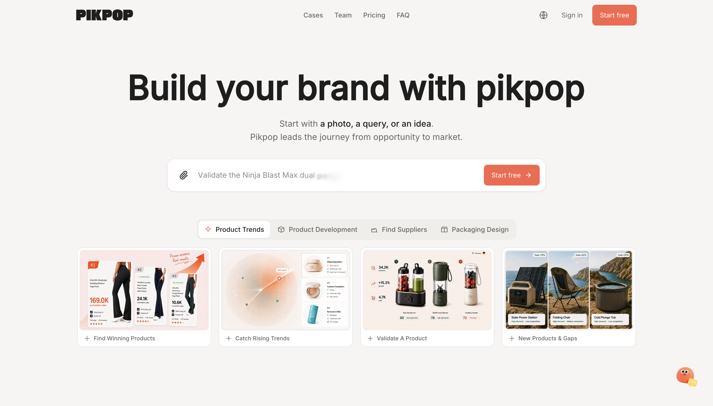
End-to-end UX ownership
I owned UX end-to-end across the full product surface. That meant designing the agent orchestration layer, the conversational interface, chain-of-thought visualization, and structured report rendering — then mapping how every module hands off to the next and collapsing the complexity into one integrated workflow tailored to European sellers.
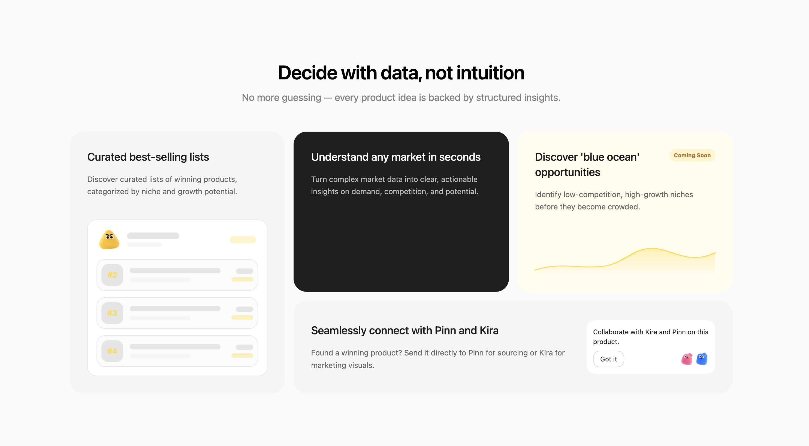
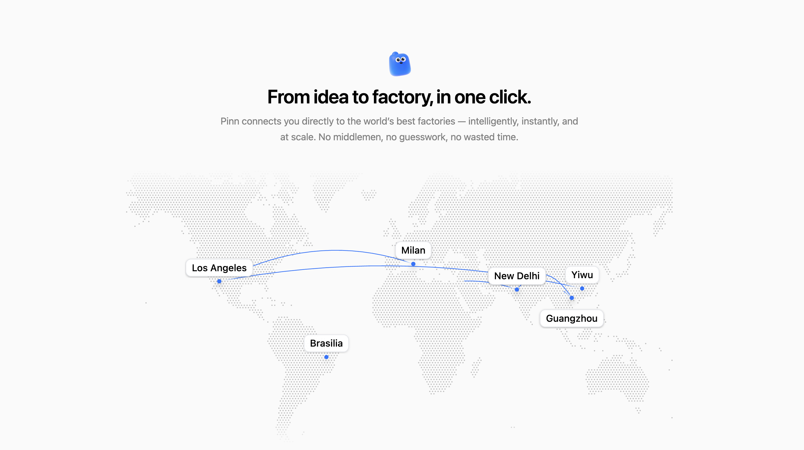
Core capabilities
I shipped the platform's core capabilities as agent skills and automated workflows, covering the full seller journey:
A seller asks Piki what's trending — say, Christmas decor on TikTok Shop — and gets back a structured Product Opportunity Report: market snapshot, opportunity score, category attractiveness, and a clear verdict.
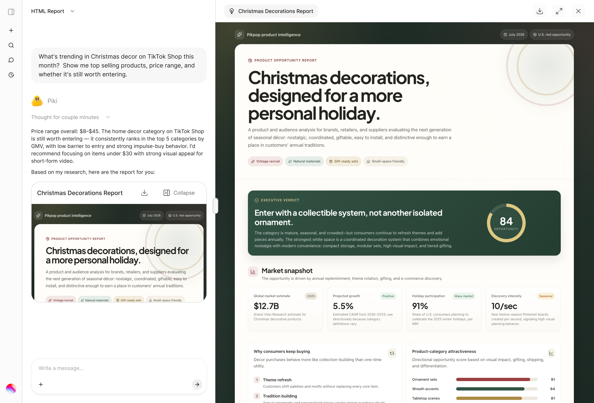
The full loop
Once a product is chosen, Pinn takes over — surfacing verified suppliers from 1688 with price ranges, MOQs, and sourcing insights, so a seller goes from idea to factory without a middleman.
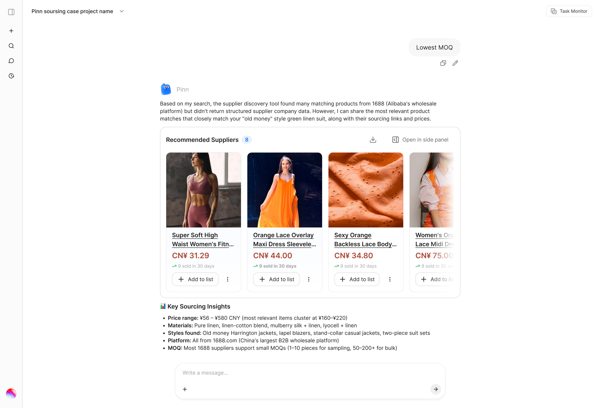
The creative side of the loop starts with Kira, which generates studio-quality product and model shots — so a seller can go from market research to launch-ready creative inside one platform.
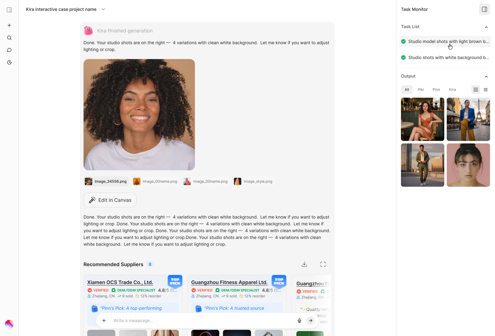
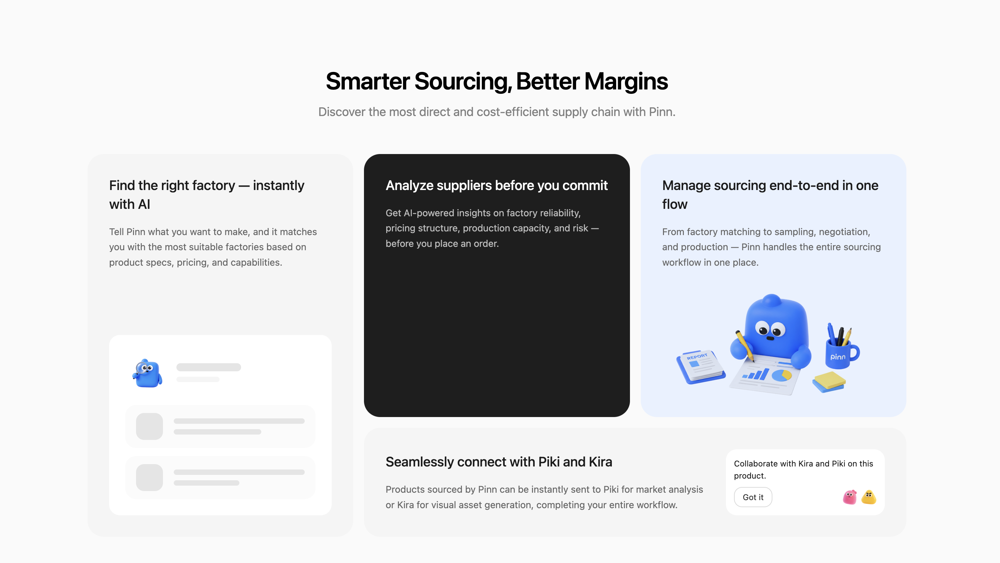
Packaging design
I designed the packaging workflow as a guided agent conversation: sellers specify target market, usage scenario, and packaging structure, then confirm a structured brief before generation — so Poppy produces designs that fit legal, channel, and product constraints rather than freeform guesswork.
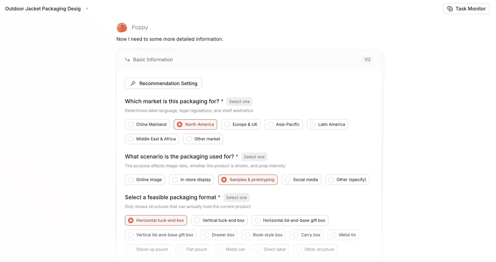
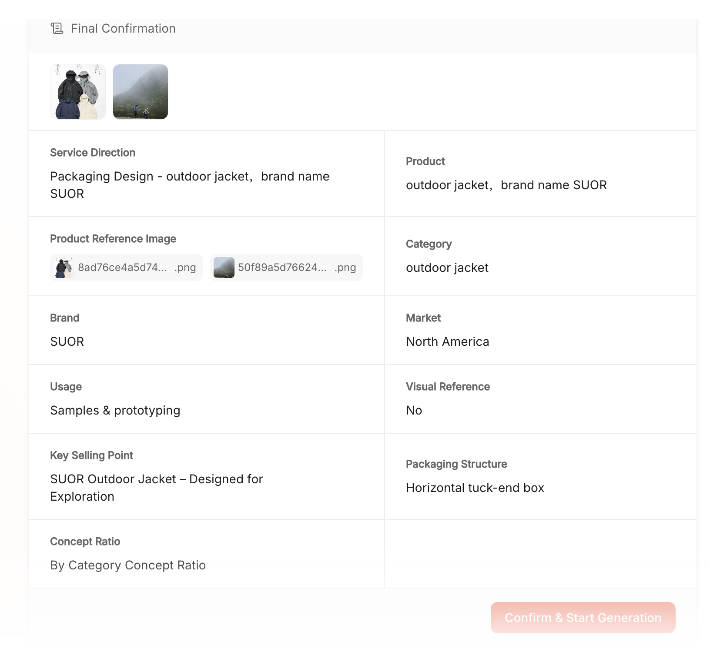
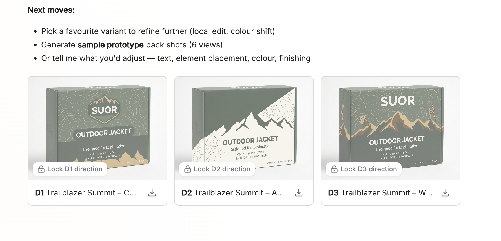
Unboxing video
Beyond still packaging, I mapped the unboxing video workflow end-to-end: requirements capture → plot direction → opening 5-second hook → generation and review loops → final output. The flow includes a dedicated branch for early feedback on the video opening, so sellers can course-correct before the full render finishes.
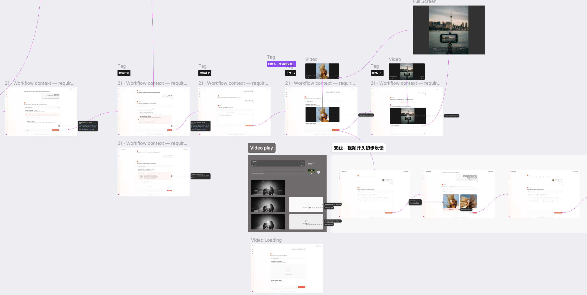
Onboarding
I designed the onboarding flow: a 3-step sequence — role selection (with IP-assisted pre-recommendation), a tailored profile form, and a free personalized market report as the first "aha" moment. Draft-resume, timeout, and failure states were all specified in the PRD and acceptance criteria so engineering could ship it with minimal review.
Opportunity evaluation
I built a product opportunity evaluation model on 1M+ TikTok and Amazon records, powering automated opportunity scoring and market-fit analysis for the platform's product recommendations — so sellers get a data-backed verdict, not a gut feel.
Validation & results
I onboarded pilots including Zalando and Paris Fashion Shop, running design reviews to validate hypotheses and reprioritize the roadmap from real usage and feedback. Within two months of release, the platform generated €20K in cumulative subscription revenue.